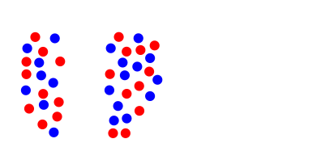
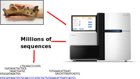
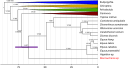
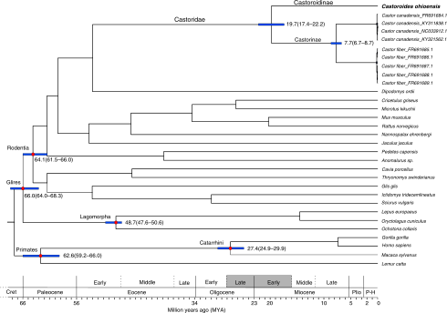
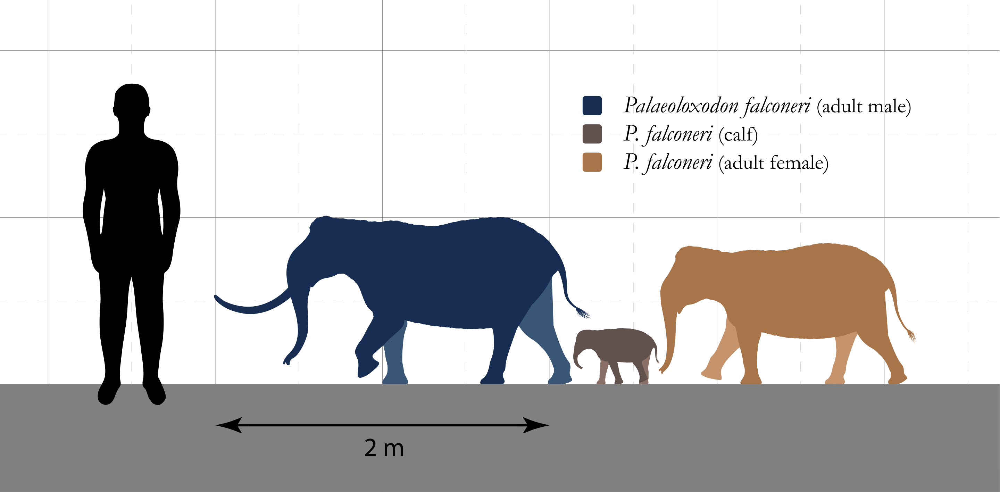

Phylogenetics and population genetics
BNS-2002: Genes, Development, and Evolution
Dr Axel Barlow
email: a.barlow@bangor.ac.uk
Phylogenetics and population genetics lectures
- Key concepts and Single locus phylogenetics
- Theory
- Methods
- Discoveries
- Multi-locus phylogenetics
- Population structure
- Conservation genetics
MEEB
Molecular Ecology and Evolution at Bangor

- 3rd year module "Molecular ecology and evolution"
- Dissertation and MSc projects
The link between evolution and genetics


Nothing in biology makes sense, except in the light of evolution
(Dobzhansky 1973)
Nothing in evolution makes sense, except in the light of population genetics
(Lynch 2007)
Key concepts
Your genome
- Size in base-pairs?
- Size in cm?
- Mass in picograms?
- Number autosomes?
- Number of sex chromosomes?
- Number of genes?
- % that is protein coding?
- % that is functional?
Your genome

Genetic locus (plural loci)
- Working definition: "a single position on a chromosome"
- Different variants at a locus are called alleles
- Difficult to determine in practise
- Simplistically a single nucleotide
- Extending beyond that depends on recombination
- Recombination results in independent evolutionary histories for unlinked loci

Examples
- Single copy genes/exons (at least practically)
- SNPs
- Microsatellites
- Mitochondrial DNA is a single locus
- Y chromosome (more or less) a single locus

Neutral evolution
- Often people think about evolution in terms of natural selection
- What if there is no selection?
- Motoo Kimura: Neutral theory of molecular evolution, 1968
- Loci evolve by genetic drift
- Drift is determined by the population (size and gene flow)
- Basis of population genetics and phylogenetics
- "Null hypothesis" of molecular evolution

Genetic drift
Simulator
Single locus phylogenetics - theory
Molecular dating of sabretooth cats

Single locus tree (AKA gene tree)
- Evolutionary history of a genetic locus, represented as a tree
- (not always an actual gene)
- Can be used to infer species or population histories*
- Any recombining genome has multiple loci, each with its own gene tree
- Easy to calculate using genetic data (often sequences)
Example: mitochondrial tree

Gene tree terminology

Clades

- A clade contains one ancestor and all its descendents
- It is a monophyletic group
- Modern taxonomy (generally) tries to align with clades
How does the tree form: lineage sorting

How does the tree form: lineage sorting

How does the tree form: lineage sorting

How does the tree form: lineage sorting

How does the tree form: lineage sorting

Lineage sorting summary
- Drift sorts the lineages into clades
- This takes time, we can't detect the divergence immediately
- We go through stages of complete/incomplete monophyly
- incomplete to complete lineage sorting
- lineage sorting is faster when the population size is small (= more drift)
- Mutation builds upon the clades, monophyly is retained [unless there is gene flow]
- ILS can be a real problem for inferring relationships, especially in large populaitons with recent divergence events
Single locus phylogenetics - methods
PCR and Sanger sequencing

- 700-1000 bp reads
- High accuracy
- 384 samples
- 1 day
- Dominated for 3 decades
PCR and Sanger sequencing
Next generation sequencing

NGS: ancient DNA
- Fragmented ancient DNA is challenging for PCR
- NGS allows whole DNA molecules to be sequenced
- High levels of contamination
- Hybridisation capture often used
- Especially for complete mitochondrial genome sequences

NGS: metabarcoding
barcoding_differences.svg)
Single locus phylogenetics - discoveries
Macrauchenia
- Native South American mammal, in order Liptoterna
- Appeared 7 Ma
- Last species, M. patachonica, extinct ~10 Ka
- First collected 1834 in Argentina by Charles Darwin, on HMS Beagle. Identified as "some large animal, I fancy a Mastodon".
- Divergence time from extant mammals unknown

Macrauchenia mitogenome phylogeny

Macrauchenia mitogenome phylogeny
Giant beaver (Castoroides)
- 2 m long, up to 125 kg, 15 cm incisors
- Extinct ~12 Ka, coinciding with arrival of Clovis people
- Several derived adapatations for wood cutting and aquatic life
- Information on evolution of "ecosystem engineers"?


Giant beaver mitogenome phylogeny

Giant beaver mitogenome phylogeny
Mediterranean Dwarf elephants
- Multiple Mediterranean islands
- 1.5 to 2.3 m at shoulder
- Direct ancestor is Palaeoloxodon antiquus
- Example of insular dwarfism
- Phylogeny could provide information on the dwarfing rate


Dwarfing rate

Dwarfing rate
Background reading
- Any phylogenetics chapters in the course text book, especially:
- Avise (2004) Molecular markers, natural history, and evolution
- Page & Holmes (1998) Molecular evolution: a phylogenetic approach
- Papers for case studies
Next time
Multilocus phylogenetics